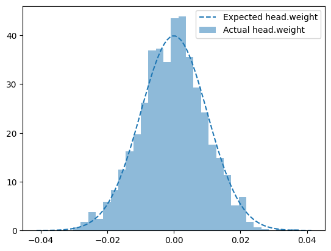

“we propose RIU-Net (for Range-Image U-Net), the adaptation of U-Net […] to the semantic segmentation of 3D LiDAR point clouds.” ### 2. Related works
“Recently, Wu et al. proposed SqueezeSeg, a novel approach for the semantic segmentation of a LiDAR point cloud represented as a spherical range-image.” ### 3. Methodology
“The method consists in feeding the U-Net architectures with 2-channels [range-images] encoding range and elevation.” #### 3.A Input of the Network
“we use a range-image named u of 512 × 64px with two channels: the depth towards the sensor and the elevation.”
“We propose to identify [empty pixels (pixels that are considered invalid by the LIDAR sensor)] using a binary mask m equal to 0 for empty pixels and to 1 otherwise.” #### 3.B Architecture
“the encoder consists in the repeated application of two 3×3 convolutions followed by a rectified linear unit (ReLU) and a 2×2 max-pooling layer that downsamples the input by a factor 2. Each time a downsampling is done, the number of features is doubled.”
“The decoder consists in upsampling blocks where the input is upsampled using 2 × 2 up-convolutions. Then, concatenation is done between the upsampled feature map and the corresponding feature map of the encoder. After that, two 3 × 3 convolutions are applied followed by a ReLU. This block is repeated until the output of the network matches the dimension of the input.”
“the last layer consists in a 1x1 convolution that outputs as many features as the wanted number of possible labels K 1-hot encoded.” #### 3.C Loss function
“is defined as the cross-entropy of the softmax of the output of the network.”
\[
E = -\sum_{x \in \Omega}{ \mathbf{1}_{\{m(x)>0\}}w(x)\log(p_{l(x)}(x))}
\]
“[in the equation shown above (corrected from the paper)] we define \(l(x)\) the groundtruth label of the x pixel. […] \(m(x) > 0\) are the valid pixels [(non-empty pixels)] and \(w(x)\) is a weighting function introduced to give more importance to pixels that are close to a separation between two labels, as defined in U-Net.” #### 3.D Training
“We train the network with the Adam stochastic gradient optimizer and a learning rate set to 0.001. We also use batch normalization with a momentum of 0.99 to ensure good convergence of the model. Finally, the batch size is set to 8 and the training is stopped after 10 epochs.” ### 4. Experiments
“we follow the experimental setup of the SqueezeSeg approach
“[it uses] range-images with segmentation labels exported from the 3D object detection challenge of the KITTI dataset”
“[the training/validation split] contains 8057 samples for training and 2791 for validation”
“we use the intersection-over-union metric”
“we advocate that the proposed model can operate with a frame-rate of 90 frames per second on a single GPU”
For the decoder, the paper mentions the application of “up-convolutions”, which were first defined in U-Net as:
“an upsampling of the feature map followed by a 2x2 convolution (“up-convolution”)”
Our implementation changes the 2x2 convolution to a 3x3 one to avoid croping the feature maps to handle shape mismatches with the encoder skip connections.
class Decoder(Module):"RIU-Net decoder architecture."def__init__(self, channels=(1024, 512, 256, 128, 64)):super().__init__()self.upconvs = ModuleList( [UpConv(channels[i], channels[i+1]) for i inrange(len(channels)-1)] )self.blocks = ModuleList( [Block(channels[i], channels[i+1]) for i inrange(len(channels)-1)] )def forward(self, enc_features): x = enc_features[-1]for i, (upconv, block) inenumerate(zip(self.upconvs, self.blocks)): x = upconv(x) x = torch.cat([x, enc_features[-(i+2)]], dim=1) x = block(x)return x
It implements the following architecture:
flowchart LR
A(("
Input
[(bs, 1024, h/16, w/16),
(bs, 512, h/8, w/8),
(bs, 256, h/4, w/4),
(bs, 128, h/2, w/2),
(bs, 64, h, w)]")) --> B["
UpConv
1024 -> 512"]
B --> C["
Block
concat(512,512) -> 512"]
A --> C
C --> D["
UpConv
512 -> 256"]
D --> E["
Block
concat(256,256) -> 256"]
A --> E
E --> F["
UpConv
256 -> 128"]
F --> G["
Block
concat(128,128) -> 128"]
A --> G
G --> H["
UpConv
128 -> 64"]
H --> I["
Block
concat(64,64) -> 64"]
A --> I
I --> J(("
Output
(bs, 64, h, w)"))
It initializes the weights from the upconv layers following the kaiming_normal_ algorithm in fan_in mode and nonlinearity set as ‘linear’, since no relu layer is used in the operation.
class RIUNet(Module):"RIU-Net complete architecture."def__init__(self, in_channels=5, hidden_channels=(64, 128, 256, 512, 1024), n_classes=20):super().__init__()self.n_classes = n_classesself.input_norm = BatchNorm2d(in_channels, affine=False, momentum=None)self.backbone = Sequential(OrderedDict([ (f'enc', Encoder((in_channels, *hidden_channels))), (f'dec', Decoder(hidden_channels[::-1])) ]))self.head = Conv2d(hidden_channels[0], n_classes, 1)self.init_params()def init_params(self):for n, p inself.named_parameters():if re.search('head\.weight', n): normal_(p, std=1e-2)if re.search('head\.bias', n): zeros_(p)def forward(self, x): x =self.input_norm(x) features =self.backbone(x) prediction =self.head(features)return prediction
We slightly changed it to accept 5 input channels (i.e. x, y, z, depth and reflectance) instead of the 2 (depth and elevation) proposed in the original paper.
It implements the following architecture:
flowchart LR
A(("
Input
(bs, 5, h, w)")) --> B["Encoder"]
B --> C["Decoder"]
C --> D["
Conv(1x1)
64 -> 20"]
D --> E(("
Output
(bs, 20, h, w)"))
It initializes the weights from the classification head from a normal distribution with a standard deviation of 1e-2. The motivation is to reduce any random bias on the outputs of the untrained model.
plot_param_dists(model, 'head\.weight', 0.0064)

for n, p in model.named_parameters():if re.search('head\.weight', n): fan_in = p.shape[1]*p.shape[2]*p.shape[3] mu, sigma =0., 1e-2 p_data = p.view(-1).dataassertabs(mu - p_data.mean()) <1e-2assertabs(sigma - p_data.std()) <1e-2
Loss function
The proposed equation for the loss function is the following.
\[
E = -\sum_{x \in \Omega}{w(x)\log(p_{l(x)}(x))\mathbf{1}_{\{m(x)>0\}}}
\]
The factor \(w\) is motivated as a way “to give more importance to pixels that are close to a separation between two labels”. It was first defined in U-Net as follows.
“where \(w_{c}\) […] is the weight map to balance the class frequencies, \(d_{1}\) […] denotes the distance to the border of the nearest cell and \(d_{2}\) […] the distance to the border of the second nearest cell.
While this particular equation for \(w\) can be seen as very specific for the original biomedical application in the Unet paper, its motivation is generally valid for any image semantic segmentation task such as ours. Hence, we can rewrite the equation for \(w\) as follows.
\[
w(x) = w_{c} + \lambda w_{b}
\]
Similarly to the previous equation, \(w_{c}\) accounts for class imbalance, but the second term is rewritten as a general \(w_{b}\) factor that should account for the boundaries of the semantic maps.
For now, we only implemented the \(w_{c}\) factor. We leave the \(w_{b}\) factor and the necessary experimentation to evaluate its impact in the final model as TODO items.
Since the weighing and masking of the cross entropy loss is already implemented through the parameters weight and ignore_index in Pytorch’s CrossEntropyLoss module, we implement our own wrapper simply for convenience.
Convenient wrapper for the CrossEntropyLoss module with a weight and ignore_index paremeters already set.
Exported source
class WeightedMaskedCELoss(Module):"Convenient wrapper for the CrossEntropyLoss module with a `weight` and `ignore_index` paremeters already set."def__init__(self, weight, device):super().__init__()self.ignore_index =-1self.wmCE = CrossEntropyLoss(weight=torch.from_numpy(weight).to(device), ignore_index=self.ignore_index)def forward(self, pred, label, mask): label = label.clone() label[~mask] =self.ignore_index loss =self.wmCE(pred, label)return loss
Metrics
The proposed metric is the Intersection over Union (a.k.a. the Jaccard Index), which is implemented in the following module.
As mentioned in the summarizing quotes in the first section, the original experiments used “range-images with segmentation labels exported from the 3D object detection challenge of the KITTI dataset”. Improving on that, we implement our experiments using the SemanticKITTI: A Dataset for Semantic Scene Understanding of LiDAR Sequences, which was published around the same time as the RIU-Net paper and introduced a much bigger and better dataset for the task of pointcloud semantic segmentation.
Based on what was summarized from the Methodology and Experiments sections and our adaptations described in this notebook, here are the specifications of the Data, Model, Loss, Optimizer and Metric used in our experiments:
Data:
Applied spherical projection to 512 x 64 pixels
5 channels: x, y, z, reflectance, depth
from colorcloud.behley2019iccv import get_benchmarking_dls